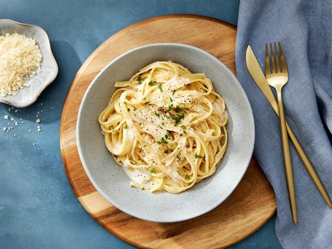

Fettuccine Alfredo was invented by a man named Alfred di Lelio in Italy, 1908. He made it
for his wife, Ines, who had just given birth to their eldest son. Ines asked for a
dish that would be nourishing yet easy to digest, as she was still very weak. So, Alfred
got to work and made some homeade fettuccine noodles and mixed them with fresh butter and
parmesan cheese, the first version of what would become his famous dish, Fettuccine Alfredo.
The Recipe
This recipe may seem simple, but the outcome is an incredible, rich, and creamy Fettuccine Alfredo.
Ingredients
24 ounces dry fettuccine pasta
1 cup butter
3/4 pint heavy cream
Salt and pepper
1 dash garlic salt
3/4 cup grated Romano cheese
1/2 cup grated Parmesan cheese

Directions
Boil a large pot of salted water. Add fettuccine pasta and cook for 8-10 minutes and then drain the water.
Melt butter and cream in a large saucepan over low heat; add salt, pepper, and garlic salt.
Increase the heat to medium; stir in grated Romano and Parmesan cheese until melted and sauce has thickened.
Add cooked pasta to sauce and toss until thoroughly coated; serve immediately.